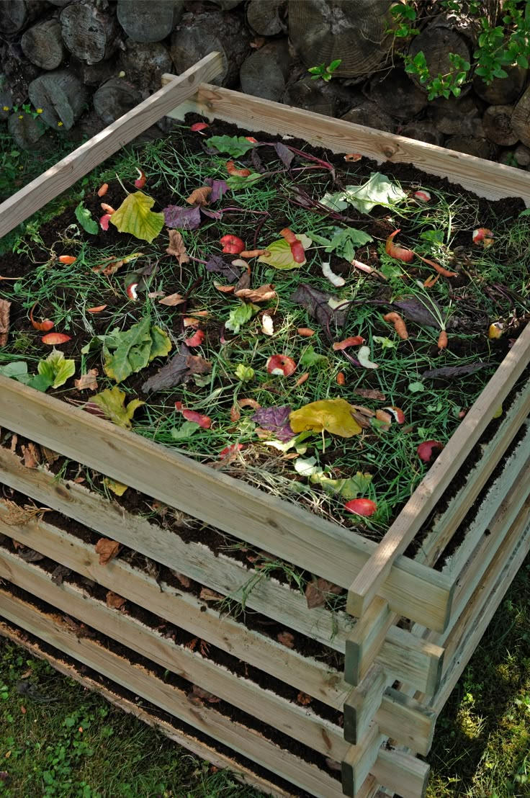
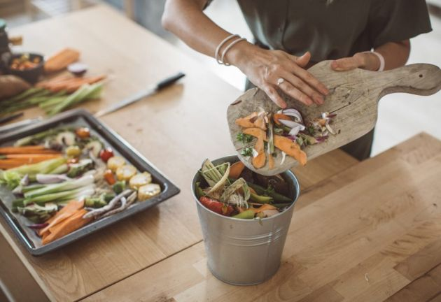
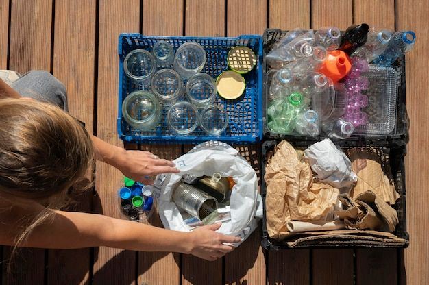
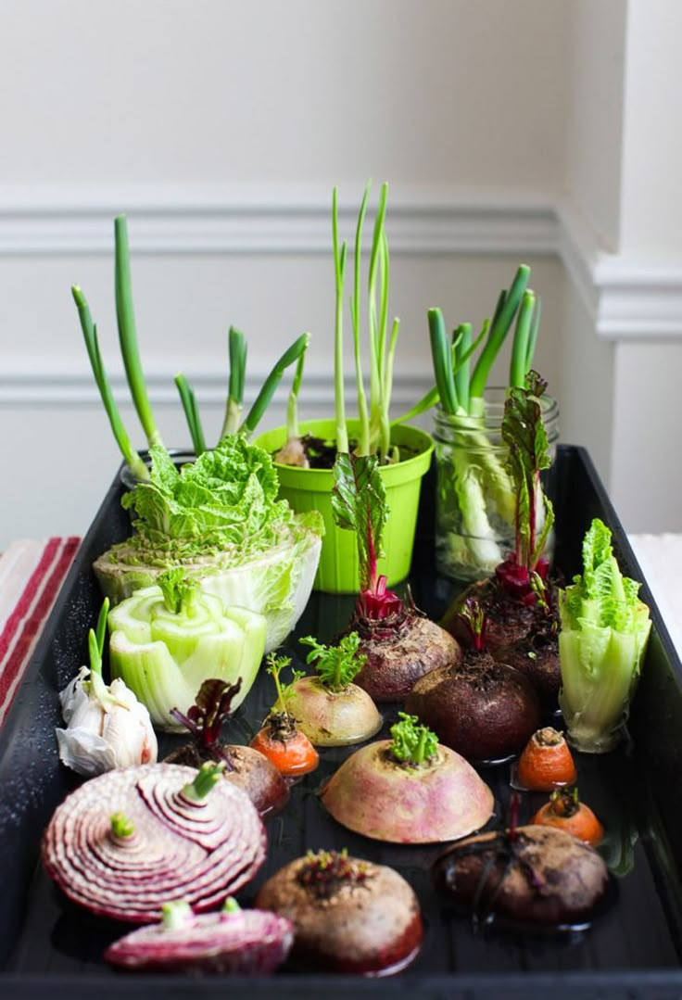
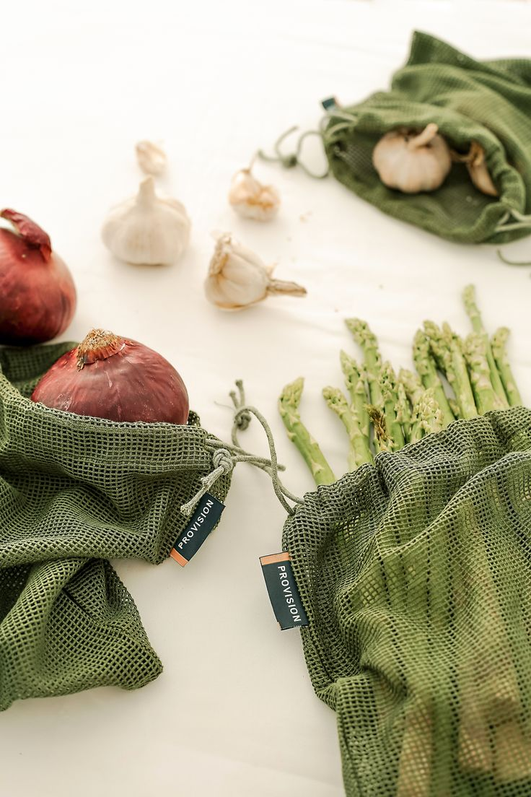
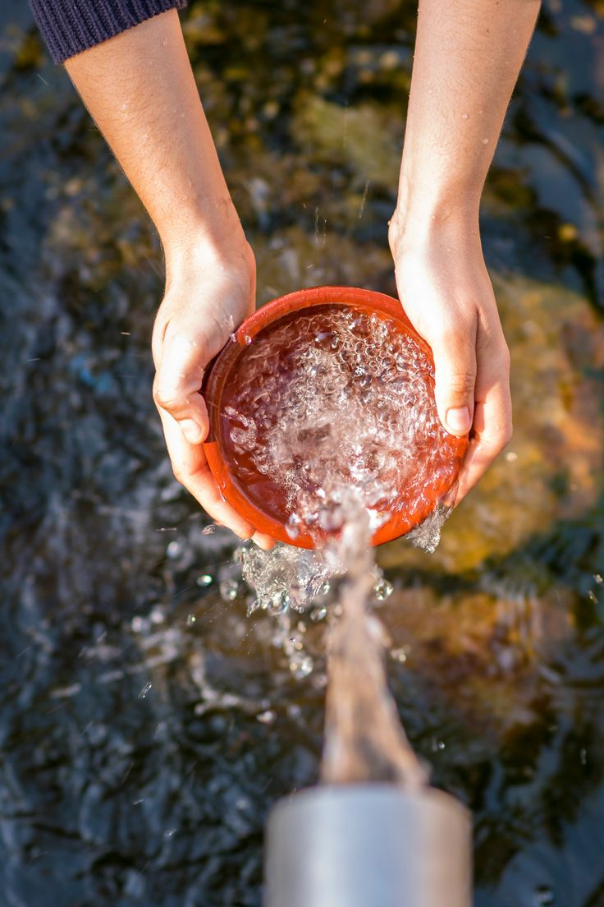

Contact Us
Find the Nearest Food Donation Bank
Resources
Sustainable Living Resources.
Guides and tips to help you reduce waste and live more eco-consciously.

FOOD WASTE
Composting 101: Turn Scraps into Gold
Start Composting

FOOD WASTE
Slash Your Food Waste: Kitchen Tips
Read Guide

RECYCLING
Beyond the Bin: Advanced Recycling Know-How
Learn More

GARDENING
Start Your Own Windowsill Herb Garden
Get Started

PLASTICS
Ways to Reduce Plastic Pollution
Discover Swaps

WATER SAVING
Easy Ways to Conserve Water at Home
View Tips